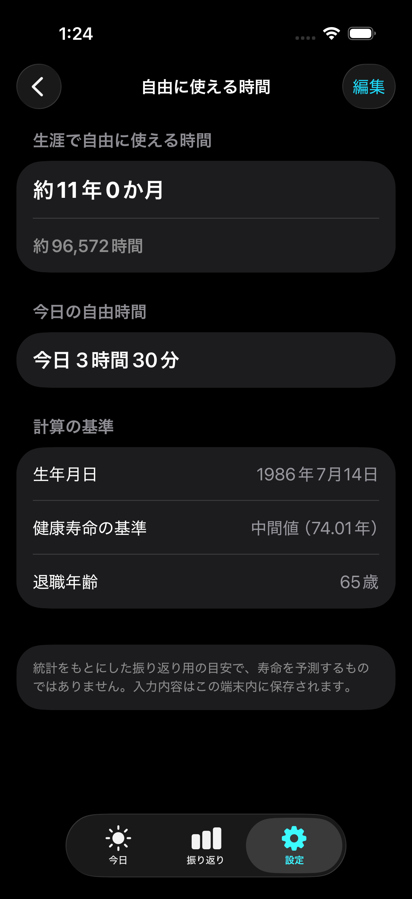

01 / FUTURE MONEY
未来のお金
+12,480円
我慢した金額ではなく、自分で選んだ行動の価値。今日、今月、これまでの積み上げを同じ基準で確認できます。
FS-2026 / PERSONAL FUTURE LEDGER
小さな行動を、
未来のお金へ。
自分自身に使える時間を、
意識できる毎日へ。
節約、健康、学びの行動をお金として記録し、積み上げを前向きに振り返る。健康寿命と日々の生活時間から、自分に残された自由な時間の目安も見えるようにします。
App Store 近日公開予定

CORE SIGNAL / 01-02
01 / FUTURE MONEY
+12,480円
我慢した金額ではなく、自分で選んだ行動の価値。今日、今月、これまでの積み上げを同じ基準で確認できます。
02 / DISPOSABLE TIME
今日 3時間30分
生涯 約11年0か月 / 約96,572時間
睡眠、仕事、通勤、食事などを除いた時間を可視化。限りある時間を何に使うか、日々の選択を見直すきっかけにします。
01 / 積み上げ
缶飲料を買わなかった。水筒を持参した。ストレッチをした。勉強を続けた。一つひとつの行動に自分なりの金額を設定し、1タップで記録できます。
02 / 時間
日本の健康寿命を基準に、睡眠、仕事、通勤、食事などの時間を質問形式で入力。今日と生涯の両方で、自分自身に使える時間の目安を表示します。
寿命の予測や医療診断ではなく、時間の使い方を振り返るための目安です。

03 / 振り返り
週と月の棒グラフ、月間カレンダー、選択日の履歴から積み上げを確認。記録がない日を責めず、小さな前進を見つけられる振り返りを目指しています。
LOCAL DEVICE / SECURE MODE
アカウント登録やクラウド同期はありません。習慣、記録、言語設定、自由時間の回答はすべて端末内に保存されます。
App Store 近日公開予定表示する金額は行動を振り返るための目安であり、実際の預金残高、収入、投資利益、医療費削減を保証するものではありません。自由時間も統計と自己申告から算出した目安であり、寿命予測や医療診断ではありません。